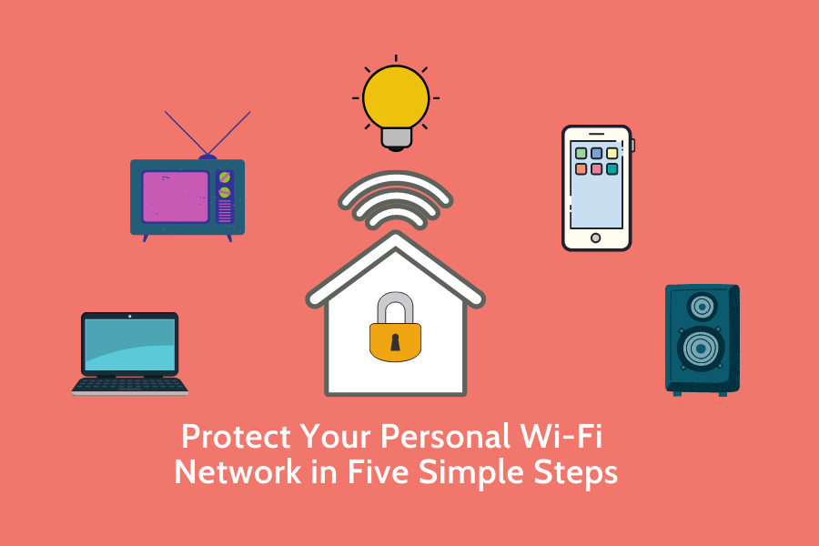

How to Protect Your Devices from Cyber Attacks: Essential Tips and Tools
By: Madison
Introduction
As technology continues to advance, cyber-attacks have become more common and sophisticated. From data breaches to malware and phishing scams, cybercriminals are always devising new ways to steal personal information and cause harm online. It's more important than ever to take steps to protect your devices from these threats. In this section, we will provide you with essential tips and tools to safeguard your devices and ensure your online safety. We will cover everything from creating strong passwords to installing security software, and give you practical advice on how to stay vigilant against cyber threats. With our help, you can take control of your online security and enjoy the benefits of technology without putting yourself at risk. So, whether you're a tech-savvy professional or a beginner user, join us in learning how to protect your devices from cyber-attacks.
ad space
Keep Your Software Updated
In the age of digital communication and internet dependency, it is almost impossible to keep up with the rapid pace of technological advancements. One of the biggest challenges that individuals and businesses face is how to protect their devices from cyber attacks. While it may seem like a daunting task, there are a few simple yet effective measures that you can take to secure your devices against potential threats.
One of the easiest and most impactful ways to fortify your digital defenses is by keeping your software updated. Software updates contain important security patches, bug fixes, and other enhancements that can strengthen your device's immunity against cyber attacks. Hackers often exploit vulnerabilities in outdated software to gain access to your device and steal your sensitive data. However, by installing software updates promptly, you can stay one step ahead of cyber criminals and minimize the risk of a security breach.
Not only do software updates improve security, but they also enhance the performance and functionality of your device. Updated software often includes new features, improved user experience, and compatibility with the latest applications. By neglecting to update your software, you are missing out on valuable features and depriving your device of optimal performance.
In conclusion, keeping your software updated is a crucial component of device security that should not be overlooked. By regularly installing updates, you can strengthen your device's defenses against cyber attacks, experience enhanced performance, and stay on top of the latest features and capabilities. At the end of the day, investing a few minutes into software updates can save you hours of frustration in the event of a security breach.
ad space
Protect Your Passwords
In today's world, our lives are almost completely integrated with the internet. We use it for work, communication, entertainment, and even online shopping. Unfortunately, with these benefits come risks, such as cyberattacks, which can pose a significant threat to our devices, sensitive information and personal data. To protect ourselves and our devices from potential harm, we must be proactive and take the necessary measures to safeguard our digital lives. One of the essential steps that we can take today is to protect our passwords.
Passwords are the gateway to our personal information and are often the first line of defense from cyberattacks. Therefore, it is crucial to strengthen them and ensure that they remain secure constantly. To protect your passwords, start by creating strong and unique passwords that are difficult to guess. Use a combination of uppercase and lowercase letters, symbols, and numbers. Avoid using personal information such as your name, birthdate or address. Instead, use a password manager that generates unique passwords for each site and stores them securely.
Further, use two-factor authentication (2FA) whenever possible. This process adds an extra layer of security to your accounts by requiring a verification code or biometric data in addition to your password. This added security feature helps to prevent cybercriminals from accessing your accounts even if they manage to steal your password.
Additionally, it is essential to be wary of phishing scams, which trick users into giving away their passwords by posing as legitimate companies or individuals. When you receive unsolicited emails or messages, do not click on any links or attachments, and double-check the sender's authenticity before responding. Cybercriminals are known to be crafty and will often use threats or urgent language to coerce you into giving away your password or sensitive information.
In conclusion, protecting your passwords is a fundamental step in keeping your devices safe from cyber-attacks. By taking these necessary measures, you can safeguard your digital life and ensure the privacy and security of your sensitive information. Remember that prevention is better than cure, so take the necessary precautions and protect your passwords.
ad space
Install Anti-Virus Software
When it comes to protecting your devices from cyber attacks, one of the most essential tools in your arsenal is anti-virus software. In today's increasingly digital world, our devices are under constant threat from a variety of online threats, including viruses, malware, spyware, and more. These threats can wreak havoc on our computers, tablets, and smartphones, stealing sensitive data, causing system crashes, and even locking us out of our own devices.
Fortunately, anti-virus software can help to protect your devices and keep them safe from cyber attacks. But what exactly is anti-virus software, and how does it work?
Put simply, anti-virus software is a program designed to identify, prevent, and remove malicious software from your device. It works by scanning your device for any signs of malware, including viruses, Trojans, worms, and more. If it detects any suspicious activity, it will either remove the threat or alert you to its presence, giving you the opportunity to take action.
In addition to protecting your devices from cyber attacks, anti-virus software can also help to keep your personal information safe. By blocking access to malicious websites and preventing hackers from stealing your data, it can help to ensure that your sensitive information remains secure.
Of course, not all anti-virus software is created equal. It's important to do your research and choose a reputable program that's both effective and easy to use. Look for software that's regularly updated to stay ahead of evolving threats, and that includes features like real-time scanning, automatic updates, and anti-phishing protection.
By investing in quality anti-virus software, you can take a major step toward protecting your devices from cyber attacks. So don't wait – start researching your options today, and start safeguarding your digital life.
ad space
Secure Your Wi-Fi Network
Wireless networks have become increasingly popular in recent years, providing us with greater mobility, flexibility, and convenience than ever before. However, just like any other computer network, Wi-Fi networks are also vulnerable to cyberattacks, putting our devices and personal data at risk. In this section, we will cover essential tips and tools to help you secure your Wi-Fi network and protect yourself from cyber threats.
First and foremost, it's crucial to secure your Wi-Fi network with a strong password. Avoid using simple passwords or ones that are easy to guess. Instead, create a unique password using a combination of uppercase and lowercase letters, numbers, and symbols. Your password should be at least 12 characters long and never shared with anyone.
For added security, you can also enable WPA2 encryption on your Wi-Fi network. This encryption protocol will prevent unauthorized users from accessing your network and intercepting your data. It's also advisable to change your default network SSID name and disable remote management features.
Another essential tool for securing your Wi-Fi network is a firewall. A firewall can block unauthorized access to your network and protect your devices from malware and other online threats. Most modern routers come with built-in firewalls that you can easily configure.
In addition to these tools, you can also use a virtual private network (VPN) to add an extra layer of protection to your network. A VPN encrypts your internet traffic and hides your IP address, making it much harder for hackers to intercept your data.
By following these essential tips and using the right tools, you can secure your Wi-Fi network and protect your personal data from cyber threats. Remember to keep your software and devices up-to-date with the latest security patches and always stay alert to potential online threats.
ad space
Conclusion
As internet usage expands and more devices connect online every day, the risk of cyber attacks grows. The consequences of a breach can be devastating, including financial loss or identity theft. To protect your devices from cyber attacks, it's critical to follow the best practices and use the right tools. From using a VPN to selecting strong passwords, staying vigilant and informed can significantly reduce the likelihood of an attack.
In summary, safeguarding your devices against cyber attacks requires a multipronged approach that includes proactive measures such as performing regular software updates, backing up data regularly, using anti-virus software, and managing access control. It's equally crucial to maintain awareness of the evolving threats and cyber-security trends constantly.
Apart from these fundamental measures, it's also essential to adopt a proactive approach to securing your network and data. Ensure that you follow the right protocol to protect your devices from unauthorized access, such as using 2-step verification or enabling Device Encryption. Also, investing in hardware-based security tools such as Firewalls and Intrusion detection and prevention systems can provide you with an additional layer of protection against any potential cyber attacks.
Protecting your devices from cyber attacks requires diligence and commitment. By adhering to the best practices, using the right tools, and staying informed, you can significantly reduce your exposure to such attacks. So don't wait any longer; get started with securing your devices today!
ad space